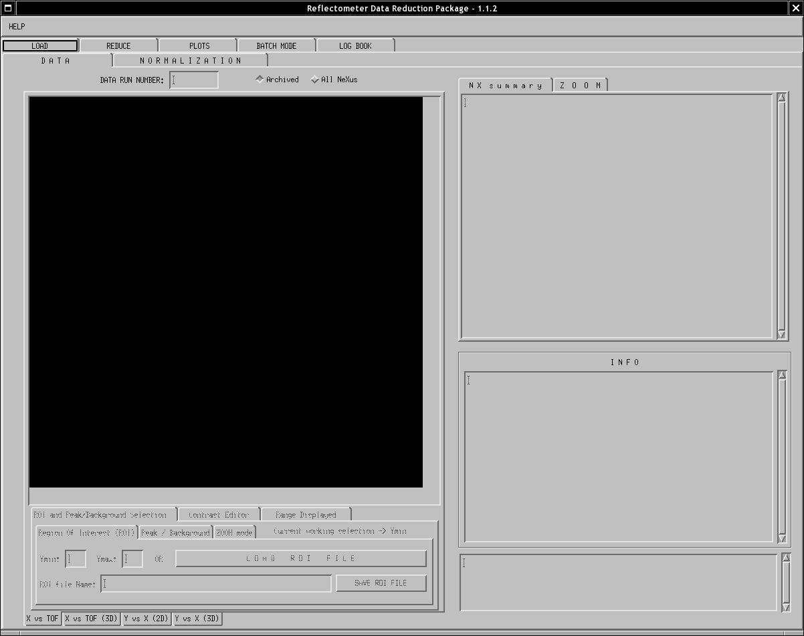
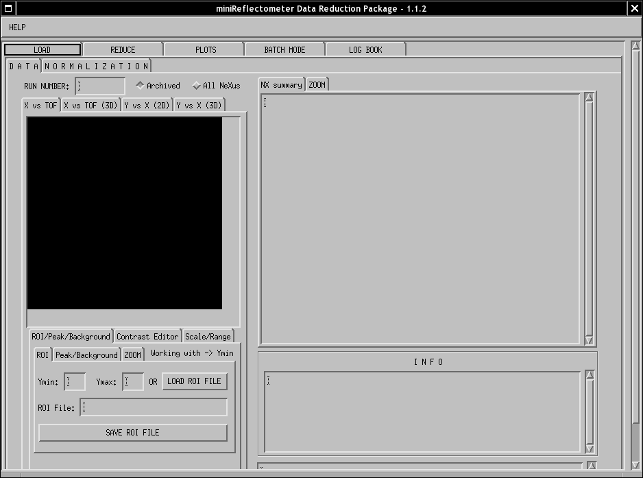

Welcome to the Online Help page of the REFreduction application
Using REFreduction, you are able to perform a full Data Reduction of the data take at either the Reflectometer or Magnetism Instruments at the SNS.

High Resolution (for large screens) version of tool. Application is 1200 pixels wide by 885 pixels height.

Low Resolution (for laptops screens) version of tool. Application is 880 pixels wide by 677 pixels height.